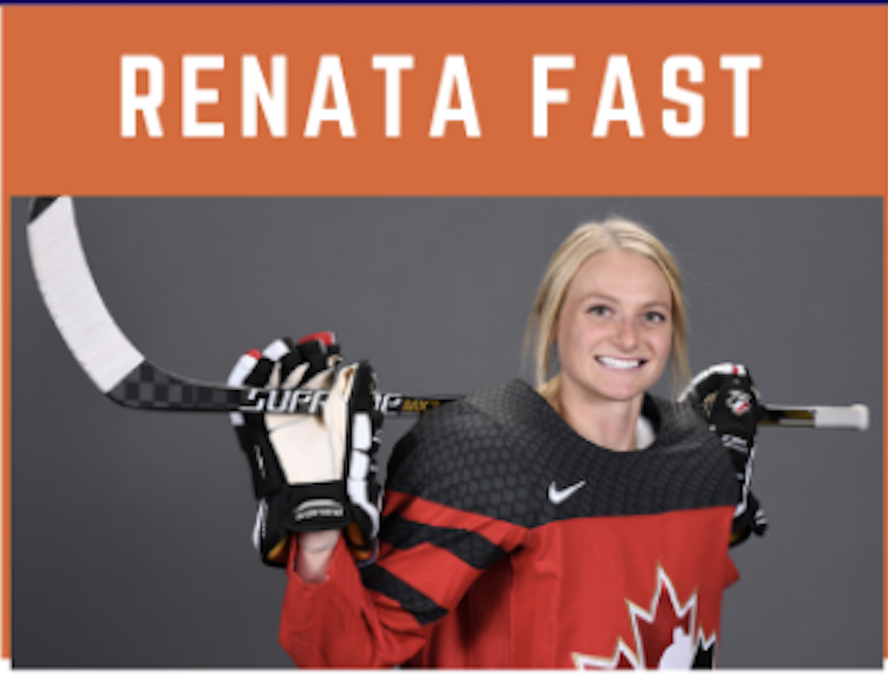

<div>
    <table style="border-style: none;">
        <tr>
            <td>
            </td>
            <td>
                <div style="font-family: Arial; font-size: 18px; color: rgb(54, 96, 146);">
                    <p>Renata Fast is an Olympic Silver Medalist and CUDAS alumni.  Winner of the 2014 National Championships in her sophomore year with the Clarkson University Golden Knights.  5 years on the Canadian National Team and a member of the Canadian Women’s Hockey League (CWHL), having played for the Toronto Furies.</p>

                        <p>In the aftermath of the termination of the CWHL, Renata joined her teammates in the creation of the Professional Women’s Hockey Players Association (PWHPA), with a mission to fight for a better future for women’s hockey.  Information on the PWHPA and current action being taken can be found at <a href="http://pwhpa.com" target="_">http://pwhpa.com</a></p>
                        
                        <a href="https://www.renatafast.com" target="_">www.renatafast.com</a>

                    <a href="" target="_"> </a>
                </div>
            </td>
        </tr>

    </table>

</div>